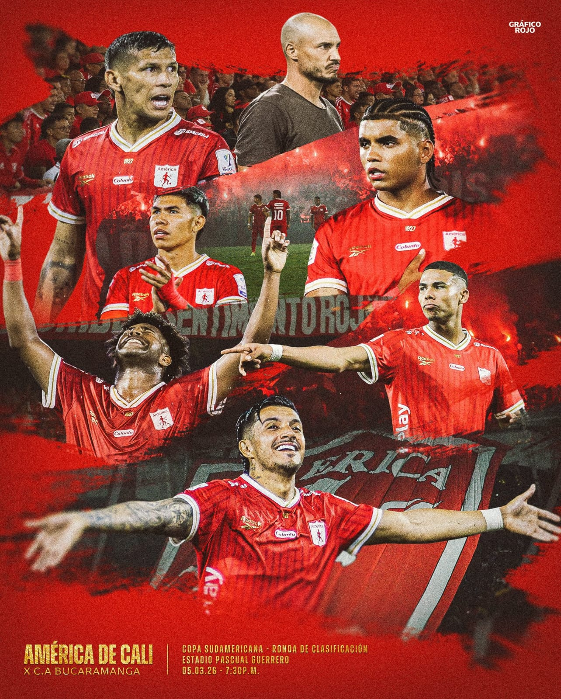
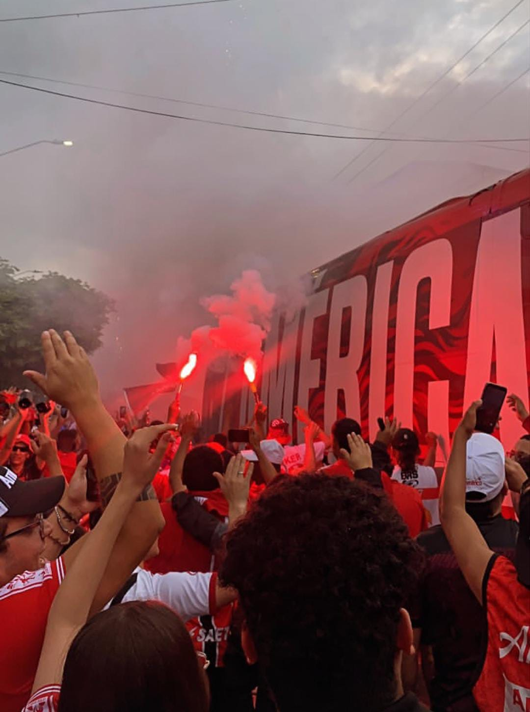

El América de Cali es uno de los clubes más importantes y populares del fútbol colombiano. Fue fundado el 13 de febrero de 1927 en la ciudad de Cali, Colombia. El equipo se caracteriza por su uniforme rojo y por tener una de las hinchadas más grandes del país. Durante muchos años el club luchó por conseguir su primer título de liga, lo que finalmente logró en 1979. A partir de ese momento comenzó una de las épocas más exitosas de su historia, ganando varios campeonatos nacionales y convirtiéndose en protagonista del fútbol sudamericano. En la década de los 80 el equipo alcanzó cuatro finales de la Copa Libertadores de América (1985, 1986, 1987 y 1996), consolidándose como uno de los clubes más fuertes del continente. Aunque no logró ganar el torneo, esas campañas lo hicieron reconocido internacionalmente. En 2011 el club descendió a la segunda división del fútbol colombiano, lo cual fue uno de los momentos más difíciles de su historia. Sin embargo, en 2016 logró regresar a la primera división después de ganar el torneo de ascenso.
El América de Cali surgió en un contexto de efervescencia futbolística en la capital vallecaucana, cuando un grupo de jóvenes liderados por Domingo Uría y Francisco Ricaurte Carrizosa se reunieron para formar el club. Inicialmente conocido como "América Football Club", adoptó su nombre inspirado en el continente americano y en el color rojo de su camiseta, que simboliza la pasión y el fuego de su gente. En sus primeras décadas, el equipo compitió en torneos regionales del Valle del Cauca, ganando ligas locales y construyendo una base de aficionados leales, conocidos como la "Mecha" o la "Barra del Diablo", famosa por su fervor inigualable.

Tras el primer campeonato en 1979 bajo la dirección de Gabriel Ochoa Uribe, el América inició una racha impresionante. Entre 1979 y 2002, acumuló 13 títulos de la Liga Colombiana, empatando con Millonarios como el club más ganador del país hasta ese momento. Destacan las estrellas como Ricardo Gareca, Roberto Cabañas, Willington Ortiz y Francesco Maza, quienes lideraron tricampeonatos en los años 80 (1982, 1983, 1984) y finales consecutivas en los 90. Esta hegemonía incluyó también victorias en la Copa Colombia y la Superliga, consolidando al "Escarlata" como el rey del fútbol nacional.
Las campañas en la Copa Libertadores marcaron el pico de su prestigio sudamericano. En 1985 y 1986, bajo el mando de Carlos Salvador Bilardo y Humberto Dionisio, el América llegó a las finales, enfrentando a Argentinos Juniors y River Plate, respectivamente, en duelos épicos que llenaron de orgullo a Colombia. Repitió en 1987 contra Peñarol y en 1996 ante River Plate nuevamente. Aunque el trofeo se escapó por detalles, estos logros le valieron participaciones en la Copa Interamericana y la Copa Simón Bolívar, además de un reconocimiento eterno como "el equipo de las finales".
El descenso de 2011, tras una irregular temporada, fue un golpe devastador para el club más querido de Cali y uno de los más populares de Colombia, con millones de hinchas en todo el país. Factores como problemas administrativos, deudas y cambios en el formato de la liga contribuyeron a la crisis. Sin embargo, la pasión de la afición nunca decayó. Bajo la presidencia de Mauricio Ortega y con figuras como Adrián Ramos, el equipo dominó la Primera B en 2016, ascendiendo con récord de puntos y goles. Desde entonces, ha sumado más títulos: la Liga en 2020-I y 2021-II, la Copa Colombia en 2022 y la Superliga en varias ocasiones, demostrando resiliencia.
El América juega en el Estadio Olímpico Pascual Guerrero, con capacidad para 46.000 espectadores, un coliseo icónico que vibra con cánticos como "¡Rojo nadie nos para!". Su escudo, con las iniciales "AC" entrelazadas y el rojo predominante, representa tradición. El club ha formado leyendas como Falcao García en sus divisiones inferiores y mantiene una rivalidad intensa con Deportivo Cali, el clásico vallecaucano que paraliza la región.
Hasta 2026, el América suma 15 títulos de Liga (el más reciente en 2021-II), 3 Copas Colombia, 4 Superligas y múltiples trofeos regionales. Internacionalmente, sus cuatro subcampeonatos en Libertadores lo colocan entre la élite histórica del torneo. Hoy, con una hinchada que supera los 10 millones de seguidores, el "Escarlata" sigue siendo símbolo de garra, superación y el orgullo de Cali, inspirando generaciones en el fútbol colombiano.